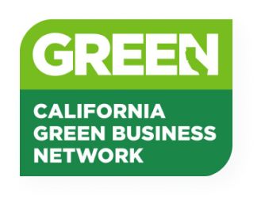

Reliable Managed IT Services Designed To Enhance Your Mission
Varsity provides first-class IT solutions tailored to nonprofit, higher education, and social sector organizations.
Experience The Difference With A Dedicated IT PartnerVARSITY TECHNOLOGIES
Tailored Managed IT
Services +
Solutions To
Mitigate Risk In Your
Organization
Schedule A Consultation
For nonprofits and mission-driven organizations across California, limited resources, budget constraints, and the need for robust data security can create unique challenges when it comes to implementing and managing technology. But when employed effectively, technology can truly be a game-changer, enabling improved efficiency, cost savings, and streamlined operations.
At Varsity, we understand these challenges and are committed to making a difference for San Francisco Bay Area organizations. We’re more than just an IT service provider; we’re a partner that cares about your mission as much as you do. Social impact isn’t just a catchphrase for us; it’s part of our DNA. Our bespoke IT solutions and consulting services are designed to help San Francisco nonprofits navigate the complexities of the digital landscape, allowing you to focus on what matters most: driving your mission forward.
SERVICES
Empower Your Nonprofit With Comprehensive IT
We offer a full range of IT solutions and support services to keep your organization running smoothly.

-
Cybersecurity
A firewall alone isn’t enough to protect your sensitive information. Our team of experts will assess your organization’s unique risks and implement a multilayered security strategy that safeguards against potential threats. We’ll also ensure your systems and data are HIPAA-compliant.
-
Cloud Services
Whether you are using AWS or Azure, or still managing on-site solutions, our cloud services are flexible enough to meet all your needs. We’ll help your San Francisco nonprofit manage, support, and scale up legacy applications, and develop a clear, streamlined path for migrating your assets to the cloud.
-
IT Consulting & Support
Technology must continually adapt to meet an organization’s operational needs. Our consultants will help you plan and execute your major IT projects efficiently and within budget, as well as formulate a long-term IT strategy to meet your goals.
-
Data Protection & Governance
It’s normal to worry about situations beyond your control, but with our data protection and governance services, you can rest easy knowing your data is always safe. We’ll help you protect your San Francisco organization against data loss or theft, stay compliant, and prepare for any future IT risks.
GUIDE
What Makes The Varsity Team Different From Other
Managed IT Providers?

Proven Technology Strategy
Technology should help drive your organizational success, not hinder it. This requires strong collaboration, intelligent technical solutions, and solid partnership. Our strategy is to adapt, evolve, and continuously improve so we can better serve you and the communities you serve.

Dedicated Support
As a service provider to San Francisco nonprofits, we understand your dedication to the clients and causes you serve. We can help measure your impact with metrics and data analytics that matter and ensure your technology keeps evolving to maximize that impact.

A Committed Partner
As a managed services provider, we help our Bay Area partners optimize their operations, not just take problems off their hands. Our goal is to empower our clients to make well-informed decisions and strategic choices.
NEW OFFERING
Elevate Your Cybersecurity
With
Penetration Testing +
Vulnerability Scanning
Cyberthreats are constantly evolving, and if you’re not aware of the vulnerabilities in your system, you’re at risk. In addition to our managed services, Varsity Technologies’ penetration testing and vulnerability scanning services help proactively identify and mitigate potential risks to ensure your Bay Area organization is always one step ahead of cybercriminals.


External PenTest
Identifies potential threats against your public IP address through a combination of user profiling, informational gathering, vulnerability testing, holistic security reviews, and more.

External + Internal Network PenTest
Evaluates the overall strength of your company’s security posture by finding vulnerabilities in your external and internal network environment.

Vulnerability Scan
Conducts automated high-levels tests that pinpoint system vulnerabilities and displays them on a dashboard, providing a comprehensive report of security risks.
VARSITY UNIVERSITY
Take Your Knowledge Up A Notch With
Varsity University Webinars And More
We host a monthly webinar series where you can learn how to maximize your technology investments and optimize your IT systems. We are proud to be Microsoft AI Cloud Partner, B-Corp member, listed as a trusted consultant on TechSoup, and much more. Sign up for our Tech For Good Newsletter for more insights!
TESTIMONIALS
As A Managed Services Provider, We Work Relentlessly To Serve Nonprofits In California & Beyond
Assessing Your Cybersecurity = Fast And Easy
Is your San Francisco business protected from online threats? Take our free assessment to find out where you stand.
Free IT AssessmentCERTIFIED
Certified B-Corporation That Leads The Way In Ethical Organizational Practices
Varsity Tech isn’t just a managed services provider; we’re a Certified B-Corporation committed to making a positive social and environmental impact on the world. As a B-Corp, Varsity Tech strives to be a carbon-negative trailblazer in the tech industry by implementing green initiatives, electric vehicles, and much more. We also prioritize transparency and accountability with our processes, integrating ethical values into every aspect of our business.
00%
Carbon Neutral

California Green
Certified Business
00%
Electric Fleet of Vehicles
LEED Certified SF
Office
Building